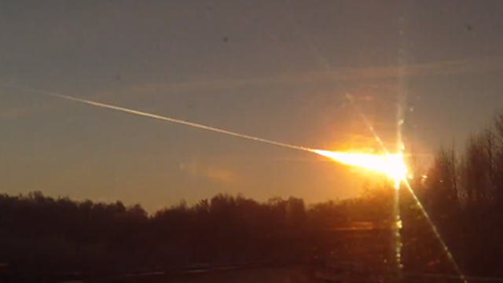

Exploding meteor over Russia injures more than 1,100
NASA says atmosphere acted as shield against meteor likely travelling at least 54,000 km/h
With a blinding flash and a booming shock wave, a meteor blazed across the western Siberian sky Friday and exploded with the force of 20 atomic bombs, injuring more than 1,000 people as it blasted out windows and spread panic in a city of 1 million.
While NASA estimated the meteor was only about the size of a bus and weighed an estimated 7,000 tons, the fireball it produced was dramatic. Video shot by startled residents of the city of Chelyabinsk showed its streaming contrails as it arced toward the horizon just after sunrise, looking like something from a world-ending science-fiction movie.
'We saw a big burst of light, then went outside to see what it was and we heard a really loud, thundering sound.' —Sergey Hametov, Chelyabinsk resident
The largest recorded meteor strike in more than a century occurred hours before a 45-metre asteroid passed within about 28,000 kilometers of Earth. The European Space Agency said its experts had determined there was no connection between the asteroid and the Russian meteor — just cosmic coincidence.
The meteor above western Siberia entered the Earth's atmosphere about 9:20 a.m. local time at a hypersonic speed of at least 54,000 km/h and shattered into pieces about 30-50 kilometers high, the Russian Academy of Sciences said. NASA estimated its speed at about 65,000 km/h, said it exploded about 19 to 24 miles high, released 300 to 500 kilotons of energy and left a trail 485 kilometres long.
"There was panic. People had no idea what was happening," said Sergey Hametov of Chelyabinsk, about 1,500 kilometers east of Moscow in the Ural Mountains.
"We saw a big burst of light, then went outside to see what it was and we heard a really loud, thundering sound," he told The Associated Press by telephone. Saskatoon native Michael Garnett, a goaltender for Traktor Chelyabinsk in the Kontinental Hockey League, told CBC News he was terrified by the noise, which was so loud he was convinced something had happened right next to his building.